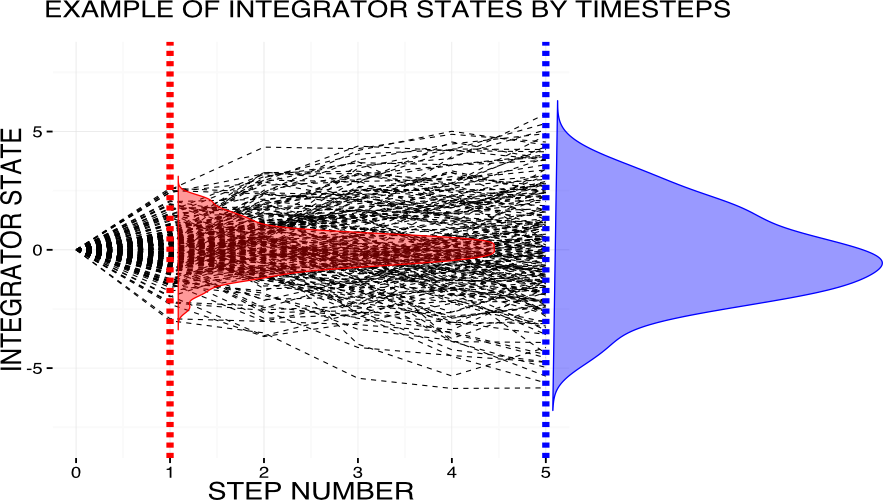
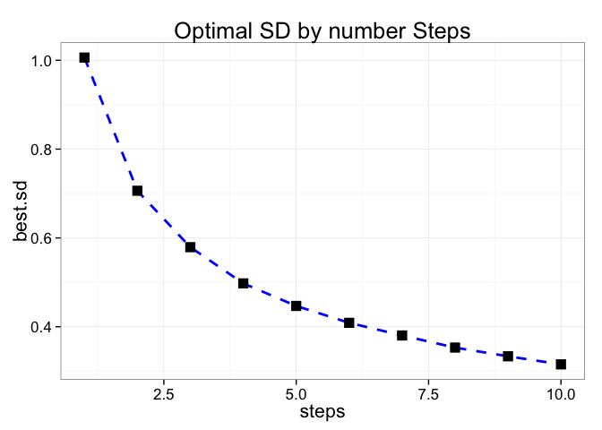
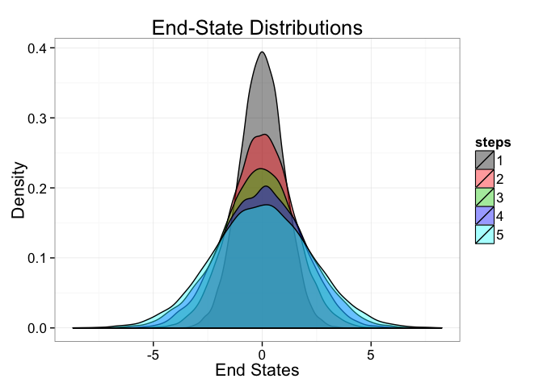

My daily work in the laboratory deals with fitting drift diffusion models to behavioral data (reaction times, decisions) from simple choice experiments. While we also work with more elaborate verisons of the model for which this does not necessarily hold, the standard drift diffusion model has two key parameters.
- The drift rate d which provides a fixed state-change in the integrator by time/integration step
- The noise s (normal gaussian) which is added at each time/integration step
Essentially the model implements what is called a wiener-process, with a fixed offset by timestep, as described this is the drift rate. When simulating the model, we essentially track the state of the integrator at each timestep/integrator step and if the state becomes equal or bigger than 1 or equal or smaller -1, we register a choice for an item x or y at the given reaction time (translating model-timesteps into milliseconds).
Now, as these fitting procedures are computationally quite costly, as easy way to reduce the number of steps in system is by making the model-timesteps bigger as measured in real time. Instead of calculating a new state of the integrator by steps of one millisecond, timesteps of two, five, ten or more milliseconds can be used. This changes the system on two accounts. First, it introduces some imprecision in the outcome space (predicted reactions times) where results can naturally only be binned according to timestates that are actually tracked in the simulation process (e.g. instead or outcomes of 1000ms,1001ms,1002ms we can now only observe 1000ms,1010ms,1020ms). Second, and more intricate, making timestpes more coarse will have an influence on the optimal noise and drift parameters of the integrators.
This is important, because, while researchers may use algorithms of different temporal resolution, they still want to compare their set of optimal parameters with what has been reported elsewhere (either based on the same experimental paradigm or also across paradigms). In this post I will try to walk through a process of figuring out for myself the changes in the noise term that appear when simulating realtively more timesteps. I ignore the drift rate in the following by assuming there is zero drift rate in the model. In a follow-up post I may solve for bost, the drift rate and the noise parameter to see whether the drift may change non-trivially (non-linearly).
Visualizing the basic setup
The graphic below shows the basic scenario that I am investigating in this post. It already hints at the fact that keeping the noise in the integrator process constant will increase the spread of the final states with increasing number of steps of integration. This fact is illustrated by the red (end states after one step of integration) and blue (end states with the same integrator noise parameter after five steps of integration) density functions.

In what follows, I will demonstrate what happens to the noise parameters, when we increase the temporal resolution of our algorithm, but condition s (the noise parameter of the integrator process) to generate exactly the same distribution of end states that was generated by our reference s in our reference temporal resolution. As mentioned above, I am going to ignore any effect on the drift rate, which I assume to be simply linear (if 1 at timesteps of one millisecond, then 10 at timesteps of ten milliseconds).
The procedure has three basic steps:
First, we pick a reference s (arbitrary) for our reference timestep (we simply assume the base model to have one step). In our case s is 1. Now from this we know the probability density function (trivially a gaussian normal distribution with mean equal to 0 and standard deviation equal to 1) for all potential end states of the model after one timestep.
Second, now we need an implementation of the diffusion process which we are going to simulate. We do this simulation with a varying number of timesteps. Moreover, for each round of simulations for which any s for the integrator per step has been picked, we can solve for the standard deviation of the density of end states. Having this standard deviation, we can move to part three.
Third, for each number of steps in the process (from 1 to 10 implemented here), we can now solve for the s we need to apply in the drift diffusion process, to get exactly the same distribution (guassian normal with mean equal zero and standard deviation equal to zero) of possible end-states of the accumulator as in the one step case.
Coding
In the following I am showing a fully reproducable r-code to illustrate this procedure.
Loading Necessary Packages
library(ggplot2) # for plotting results
library(neldermead) # for solving the minimization
library(tidyr) # for some data manipulationFunctions used
Implementation of the drift diffusion process:
# The function takes only one input which is the standard deviation of the noise
SimpleDiffusion = function(std){
# Initialize output vector with length equal to number of simulation runs
out = rep(0,20000)
# Now for each simulation run
for (i in seq_len(20000)){
# And within run for each step up to step.num (existing global variable at the point of execution)
for (j in seq_len(step.num)){
# We caluculate the state of the accumulator
out[i] = out[i] + rnorm(1,0,std)
}
}
# We return the vector with all final states
return(out)
}Having the output vector we need to find the best estimate for s that describes the distribution of outcome states.
The next function is used to compute a log-likelihood for a given s.
# Function takes as input a standard deviation "sd.var.inside"
LogLikDnorm = function(sd.var.inside){
# negative standard deviation is not allowed and will provide huge outcome value
if (sd.var.inside <= 0){
LogLik= 9999999
} else {
# if valid (positive) standard deviation provided, we calculate the real log-likelihood
out = dnorm(vec,0,sd.var.inside)
LogLik = -sum(log(out)) # out is available in global environment by the time called, comes from SimpleDiffusion()
}
# return log-likelihood for given standard deviation
return(LogLik)
}Lastly we need a loss-function that tells us how bad we are doing with our current choice of s for the given number of steps in approaching the original outcome distribution based on one timestep.
# Takes as input a standard deviation
LossFun = function(std){
# Same as above, only positive standard deviation are treated as valid
if (std <= 0){
std.loss = 9999999
return(std.loss)
} else{
# We get the outcome of the diffusion process stored in global variable "vec" taking as input integrator noise standard deviation "std"
vec <<- SimpleDiffusion(std)
# Now we search for the standard deviation in the integrator end states that fits the "vec" data best
# by applying fminsearch
sol = fminsearch(LogLikDnorm,1)
# we extract the standard deviation that fits the simulated integrator end states best from all fminsearch output
std.opti = as.vector(sol$optbase$xopt)
# and calculate a loss relative to our reference standard deviation for integrator end states steming from the case where we only use
# one step of accumulation
std.loss = (std.opti - std.fixed)^2
}
# Returning loss for fminsearch to apply new input noise integrator standard deviation
return(std.loss)
}Running the model
# Run optimization and get outcomes
# Define our reference integrator noise standard deviation
std.fixed = 1
# Initialize the amount of steps that we want ot actually test
steps = c(1,2,3,4,5,6,7,8,9,10)
# Initialize an output data.frame
solutions = data.frame(steps = c(1,2,3,4,5,6,7,8,9,10),best.sd = rep(0,10))
# Run optimization
for (i in steps){
step.num <<- i
sol.full = fminsearch(LossFun,1/step.num)
solutions$best.sd[solutions$steps == i] = as.vector(sol.full$optbase$xopt)
}
# Plot Output
p = ggplot(data=solutions,aes(x=steps,y=best.sd)) + theme_bw(base_size=16) + geom_line(linetype="dashed",color="blue",size = 1) + geom_point(shape = 15, size = 4) + ggtitle("Optimal SD by number Steps")
p
We can see that the standard deviation for the noise of the integrator, seems to follow something like a sqrt() function when we condition the distribution of endstates of the integrator to be steming from a constant distribution.
An alternative approach to illustrate the Phenomenon
Lastly, as an addition to aid understanding, it is also possible to simply plot the endstate-distribution for differing numbers of steps, given that the standard deviation of the integrator noise stays constant.
# Define out vector
out = data.frame(steps.1 = rep(0,20000),
steps.2 = rep(0,20000),
steps.3 = rep(0,20000),
steps.4 = rep(0,20000),
steps.5 = rep(0,20000))
# Run Diffusion process for differing timesteps and collect outputs in data frame
for (i in seq(1:5)){
step.num = i
out[,c(paste("steps.",toString(i),sep=""))] = SimpleDiffusion(1)
}
# Bring data to long format for convenient plotting
out = gather(out,steps,values)
# Plot Results
p.2 = ggplot(data=out,aes(x=values,y = ..density..,fill=steps)) + theme_bw(base_size=16) + geom_density(alpha=0.4) + ggtitle("End-State Distributions") + ylab("Density") + xlab("End States") + scale_fill_manual(values=c(1,2,3,4,5),labels=c("1","2","3","4","5"))
p.2
We can see that the distribution of end states gets wider and wider with increasing number of steps of the integrator. Note that s of the noise in the integrator process is constant.
This analysis should provide some intuition about how to convert parameters from drift diffusion processes across different algorithm specifications regarding timestep-sizes of the integrators.
You can find all code and the markdown file of this post in this github repository.